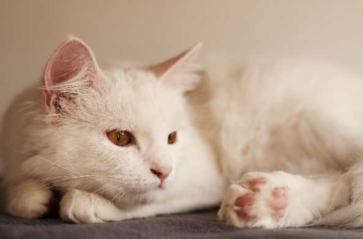

Detalhes do Gato Angorá

Descrição:
As características físicas do Angorá começam por seu corpo, que pode ser descrito como médio e longo, com as fêmeas um pouco menores que os machos. Sua cabeça tem traços triangulares, e se mostra equilibrada com o corpo. Seu focinho é levemente arredondado, já suas orelhas são largas, pontiagudas e com pequenos tufos de pelo em volta, já seus olhos são grandes em um formato similar a de uma amêndoa. As características do gato Angorá quanto ao seu pelo o descrevem como médio, quase longo e de textura sedosa. Na região do pescoço, os pelos são abundantes. Este felino possui diversas cores, sendo a branca a mais comum.
Origem e historia :
Como todos os gatos domésticos, o Angorá descende do gato selvagem africano (Felis Silvestris Lybica). Aparentemente, a história dos angorás e dos persas estão conectadas. O gato Persa foi desenvolvido por criadores americanos e britânicos a partir de mutações do gato Angorá. Apesar de algumas associações de felinos afirmarem que o gato Persa é uma raça natural, no século 19 os exemplares de gatos persas e angorás eram fisicamente idênticos.
No século 20, o gato Angorá foi usado para a melhoria da pelagem do gato Persa, mas as duas raças já eram muito diferentes, especialmente se considerarmos os exemplares de exposição da raça Persa, que apresentavam características flat-face muito mais acentuadas que anteriormente. No início do século 20, o Jardim Zoológico de Ancara iniciou um meticuloso programa de reprodução com a finalidade de proteger e preservar o que era considerado um tesouro nacional: o Angorá de pelagem branca pura. Uma das características mais valorizadas eram os olhos de cores diferentes, porém o único critério utilizado foi mesmo a cor da pelagem.
A raça foi levada ao Canadá em 1963 e foi aceita em 1973 pela Cat Fanciers Association (CFA). No entanto, apenas os exemplares brancos tinham reconhecimento até o ano de 1978. Hoje em dia, todos os clubes felinos dos Estados Unidos aceitam a raça Angorá em várias cores e padrões. Apesar da raça ainda não ser muito popular, os registros de novos filhotes estão em crescimento. Criadores turcos, no entanto, não reconhecem a versão americana do Angorá como uma verdadeira representação da raça original. De acordo com a opinião desses criadores, a versão americana do “Angorá Turco” é uma raça pura somente no papel.
Saúde e temperamento:
As principais doenças do gato Angorá, ou seja, aquelas a que possuem maior propensão são a Ataxia, Cardiomiopatia, e incompatibilidade sanguínea. A Ataxia é genética, uma doença que causa a falta de coordenação motora, deixando-o sem força e equilíbrio, devido a um problema na região neuromuscular. Esta é uma doença letal, que atinge o gato quando ainda é filhote. Outro problema que pode aparecer é a surdez, uma doença comum nos gatos de pelagem branca, podendo atingir assim o Angorá com esta cor. Os primeiro sinais clínicos de qualquer doença podem ser muitas vezes percebidos pelos próprios donos. Alterações de comportamento podem indicar o inicio de alguma doença, por isso é importante levar o animal ao médico veterinário para realizar diagnósticos. Os tratamentos preventivos dessas e outras doenças consistem nas visitas à clinica veterinária, vacinações e cuidados por parte dos donos.
O gato Angorá é frequentemente citado com um dos mais inteligentes do mundo felino. É considerado um gato de caráter equilibrado, afetuoso com seu dono e muito dócil. É descrito por seus porprietários como um gato alegre, brincalhão, muito apegado aos donos e especialmente carinhoso. Podemos dizer que esse é um gato ativo, que gosta de brincar até mesmo com brinquedos, adora correr ao ar livre e brincar em locais altos. Muito curioso, se for dada a oportunidade o Angorá vai subir em móveis, muros e árvores.
Os angorás completamente brancos e de olhos azuis são surdos.
Os gatos desta raça necessitam de banhos quinzenais, o que requer um maior cuidado do que outras raças de pelo curto. Quando lhe for dado banhos, se estiver sol quente ele deverá se estender no sol para secar, se não houver é importante o enxugar rapidamente com uma toalha e não se deve o deixar muito molhado, se conseguir utilizar secador, excelente, permite que o seu pelo fique bastante brilhante. E ainda evita que sua saúde seja abalada.
Este gato é citado ainda como um animal bastante sociável. Pode ser acostumado desde cedo a conviver com outros animais de estimação e até mesmo com crianças que saibam lidar com um gatinho. É considerado um gato que permanece ativo durante toda sua vida, mantendo o seu caráter jovial e brincalhão, mesmo depois de adulto.
São gatos que podem viver em ambientes menores, como apartamentos, mas na falta de espaço ao ar livre, vai buscar lugares para escalar, brincar e exercitar-se. Apesar de ser um gato pacato e caseiro, o mais comum é econtrar seu gato brincando por aí, pulando de um lugar para outro e explorando cada lugar da casa.
Curiosidades
- A surdez é muito comum nos gatos angorás de cor branca com olhos azuis.
- Embora tenha sido domesticado há muito tempo, o angorá ainda preserva o instinto de caça, sendo, portanto, um excelente caçador. Angorás que são criados livres em quintais grandes costumam, de vez em quando, aparecer com um rato na boca.
- Os angorás vivem, em média, 15 anos.
- Ao contrário do que diz a cultura popular sobre os gatos, os angorás são animais que gostam muito de brincar na água e de tomar banho.
Preço médio no mercado
Os gatos de raça como Angorá podem ser encontrados em canis e pet shop, e há um preço pela adoção deles. Muitos exemplares são comercializados na internet, uma forma menos segura de ter um felino. O preço do gato Angorá varia de acordo com seu sexo, linhagem, pedigree, histórico de doenças familiares, entre outros motivos. Os preços dos filhotes de gato Angorá podem ser encontrados em uma faixa de R$ 300 a R$ 800.
Fontes usadas :
Blog do gato
Fofuxo.com
Sua pesquisa.com
Guia de raças
Portal Pets